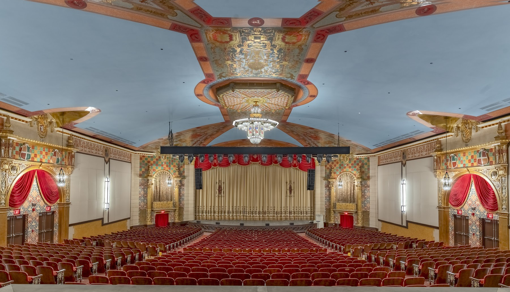
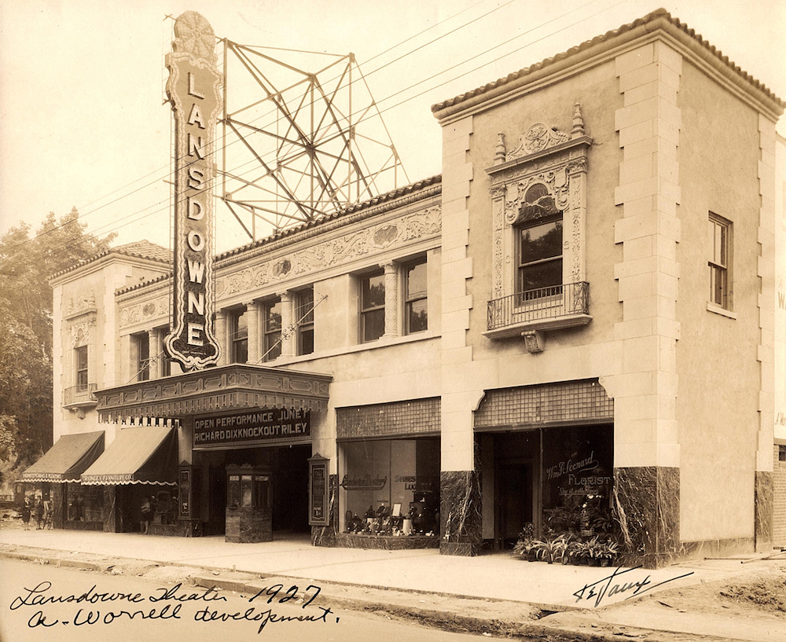
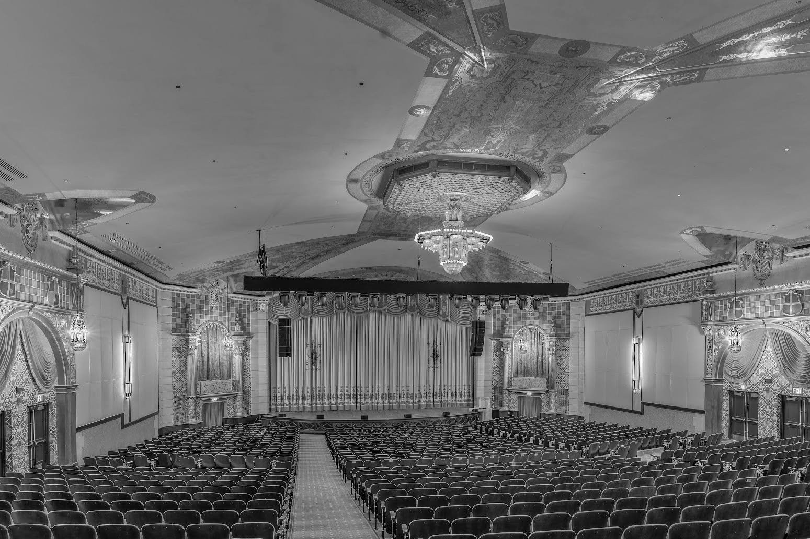

Then & Now
Same seats. Same view.
Ninety-nine years apart.
Drag the handle to travel between 1927 and today.



1927
Grand Opening
Architect William Harold Lee designs the Lansdowne Theater in the Spanish Revival style. It opens June 1, 1927 as a first-run movie house with a Kimball pipe organ — the last theater organ installed in the Philadelphia region. Miss Lansdowne flies overhead in a biplane, showering attendees with roses.
July 1987
The Fire
An electrical fire in an adjacent basement during a showing of Beverly Hills Cop II forces the theater to close. The auditorium survives — but the doors stay shut for 38 years.

2006
HLTC Founded
A small group of community members refuses to let the building die. The Historic Lansdowne Theater Corporation forms and purchases the theater in 2007 — weeks before it would have become a warehouse.

August 22, 2025
Reopening Night
After 38 years of silence, the Lansdowne opens its doors with Chazz Palminteri’s “A Bronx Tale.” 1,280 seats. Sold out. A community reborn.